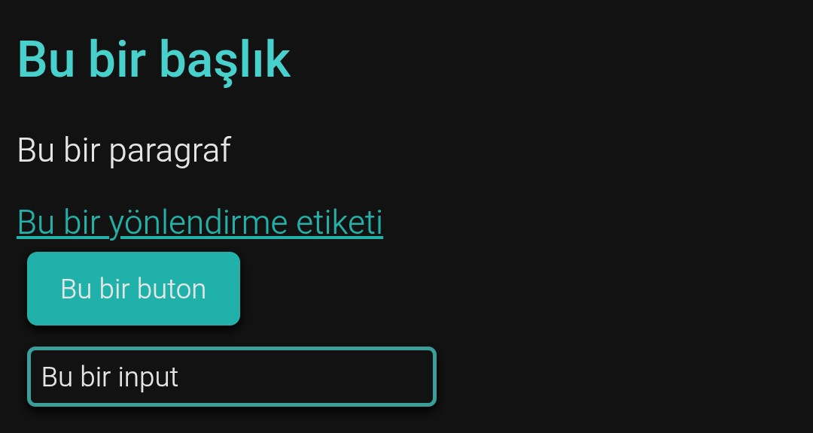
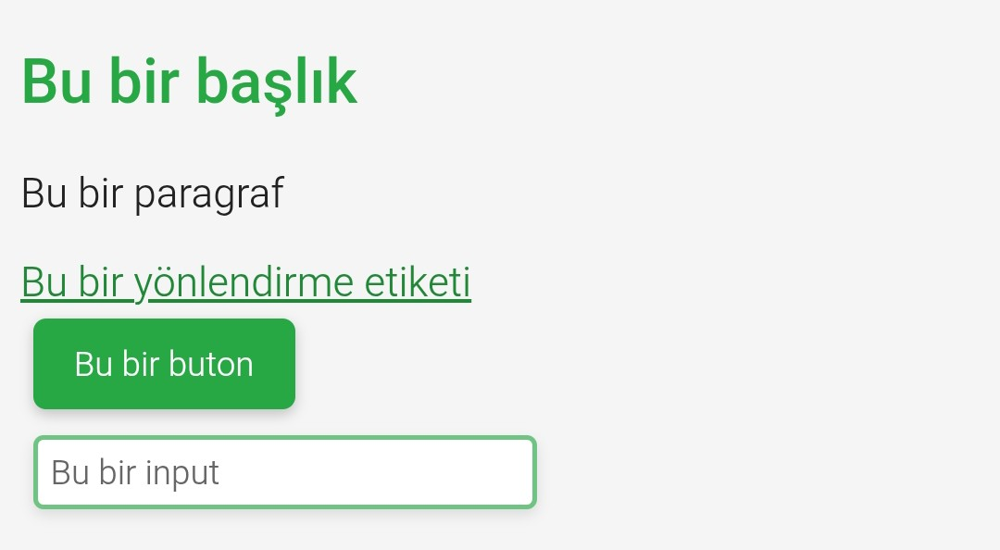
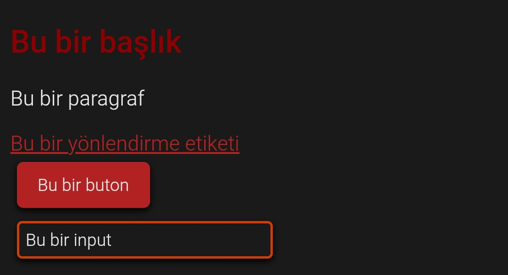

EzoraCSS 'fontlarvehizalamalar.css' Dosyası Nasıl Kullanılır?
Bir etikete hizala sınıfını verin ve yatay eksende ortalayın. Ortala sınıfınıda bir block kapsayıcıya verirseniz hem yatayda hemde dikey eksende ortalanır. Body etiketine vermediğiniz sürece ekranın tam olarak ortasına gelmezler. 😃
Sistem fontlarınıda sınıflandırarak verirsiniz. (sans-serif , arial , serif , monospace , cursive , fantasy , system-ui var şuanlık.)
Tabi önce aşağıdaki kodu head etiketinin en sonuna koyun.
Bir etikete hizala sınıfını verin ve yatay eksende ortalayın. Ortala sınıfınıda bir block kapsayıcıya verirseniz hem yatayda hemde dikey eksende ortalanır. Body etiketine vermediğiniz sürece ekranın tam olarak ortasına gelmezler. 😃
Sistem fontlarınıda sınıflandırarak verirsiniz. (sans-serif , arial , serif , monospace , cursive , fantasy , system-ui var şuanlık.)
Tabi önce aşağıdaki kodu head etiketinin en sonuna koyun.
EzoraCSS Hazır Temalar Tanımı:
Siz css yazmakla uğraşmayın temanızı seçin ve EzoraCSS sayfanızı stillendirsin.
Siz css yazmakla uğraşmayın temanızı seçin ve EzoraCSS sayfanızı stillendirsin.
Tema 1

Tema kodu (head etiketinin sonlarına koyun):
Tema 2

Tema kodu (head etiketinin sonlarına koyun):
Tema 3

Tema kodu (head etiketinin sonlarına koyun):
Şuanlık çok az hazır tema bulunsada EzoraCSS günden güne gelişiyor ve gelişecekte.